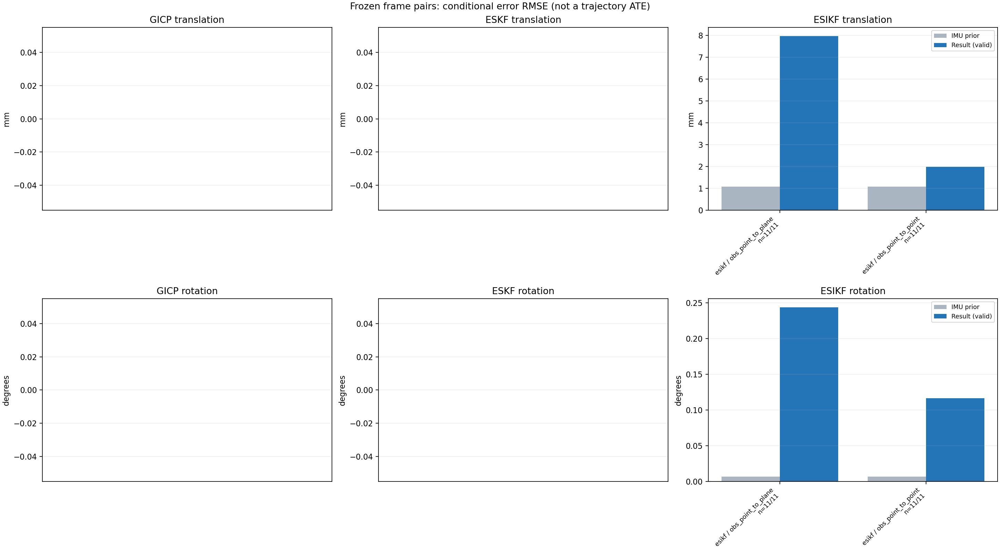

20261015_113028_roll_right · depth=disparity_cache · cache=3d0e1f08cf2bbbc7aa49
模型视差：/home/ubuntu22/slam/SIO_SLAM/models/tensorrt/disp_896x448_fp16.plan；engine SHA256=604cf6ac1f705c877260711730dd5d2d58c2a21f3020c03c668401ef7fb1e768。输入为生产裁剪与光照处理后的 RGB 0..255；此实验使用原始浮点像素视差，不应用完整前端的邻域视差后处理。
原始 ONNX SHA256：e9f49736a65d68d06681add463866b6defdf78fdd7f4f50f6cc941b682fdc0bc。
代价体图改写验证：ONNX Runtime 固定随机特征输入，最大绝对误差 0；该项检查图改写，完整模型精度仍需由录制数据评估。
配准代码版本：744ac2d993ae629b0cc44a3b1d995e04ab4fad48；观测生成版本：744ac2d993ae629b0cc44a3b1d995e04ab4fad48。
固定图像对与纯 IMU 先验；ESKF 回放固定 GICP 观测，ESIKF 直接读取点云。真值只用于此报告。
同时查看 converged 与 solver_status：上游默认 Stereo 在 max_iter / stopped_at_minimum 时也可能置 converged=true。valid 表示输入检查通过，不表示精度提升。欧氏 GICP 未提供独立的点距 RMSE，该列显示 NaN。
误差按每对图像的锚点计算，单位 m / degrees。此处 RMSE 不是全序列 ATE；末帧受同一锚点条件约束。NIS 与条件马氏距离是诊断量，少量相关图像对不能用于宣称协方差已校准。
全部指标 CSV · R / P 矩阵 CSV · Stereo 求解逐轮 CSV · ESIKF 逐轮轨迹 CSV · 末轮 H / R / K_pose 矩阵 CSV · 配置快照 · 矢量图
unflagged 排除纯惯性先验平移误差超过 50 mm 的图像对；whitened 为误差按协方差白化后的每自由度均值，协方差与实际误差相符时约为 1。prior_whitened 用真值误差只检验先验 P；NIS 为 ESIKF 首轮 rᵀ(P+R)⁻¹r，不用真值，检验的是 P+R 的总量，单靠它分不开 P 与 R，偏差、错误对应和线性化误差也会抬高它。观测方差超过先验方差 1e+04 倍的方向视为不可观，从 NIS 及其自由度中去掉（nis_dof）。一致时 nis_per_dof 均值约 1、nis_over_chi2_median 中位数约 1；帧对少且共享序列，超出 95% 分位的比例只作参考。
| stage | method | variant | valid | total | result_translation_rmse_m | result_rotation_rmse_deg | result_translation_median_m | result_rotation_median_deg | result_translation_rmse_unflagged_m | result_rotation_rmse_unflagged_deg | improved_translation | improved_rotation | posterior_whitened_by_P_rot_mean | posterior_whitened_by_P_trans_mean | prior_whitened_by_P_rot_mean | prior_whitened_by_P_trans_mean | nis_per_dof_mean | nis_over_chi2_median_median | nis_exceeds_chi2_95_fraction |
|---|---|---|---|---|---|---|---|---|---|---|---|---|---|---|---|---|---|---|---|
| esikf | esikf | obs_point_to_plane | 11 | 11 | 0.0079693 | 0.24365 | 0.0066228 | 0.19535 | 0.0079693 | 0.24365 | 0 | 0 | 10.699 | 9.0136 | 4.5797e-07 | 7.3224e-07 | 0.0081306 | 0.00077553 | 0 |
| esikf | esikf | obs_point_to_point | 11 | 11 | 0.0019891 | 0.1162 | 0.0010886 | 0.042926 | 0.0019891 | 0.1162 | 0 | 0 | 18.287 | 4.5847 | 4.5797e-07 | 7.3224e-07 | 0.0008107 | 5.2872e-05 | 0 |

| stage | case | method | variant | status | solver_status | inliers | converged | covariance_convention | covariance_from_hessian | fitness | registration_rmse_m | prior_trans_error_m | result_trans_error_m | prior_rot_error_deg | result_rot_error_deg | prior_flagged | R_rot_trace_rad2 | R_pos_trace_m2 | nis_regularized | posterior_whitened_by_P_rot | posterior_whitened_by_P_trans | prior_whitened_by_P_rot | prior_whitened_by_P_trans | nis_per_dof | nis_dof |
|---|---|---|---|---|---|---|---|---|---|---|---|---|---|---|---|---|---|---|---|---|---|---|---|---|---|
| esikf | static_a096 | esikf | obs_point_to_point | updated | converged | 9197 | 1 | 1 | 0 | 0 | 1.1377e-05 | 0.00087117 | 0.0013413 | 0.024368 | 0 | 1.5721e-07 | 9.2239e-07 | nan | 1.0712 | 0.88615 | 1.8268e-08 | 4.1688e-09 | 1.495e-05 | 6 | |
| esikf | static_a096 | esikf | obs_point_to_plane | updated_not_converged | max_iterations | 9315 | 0 | 1 | 0 | 0 | 1.1377e-05 | 0.0049986 | 0.0013413 | 0.060449 | 0 | 1.489e-06 | 4.5103e-06 | nan | 0.52585 | 3.3119 | 1.8268e-08 | 4.1688e-09 | 7.5595e-05 | 6 | |
| esikf | static_a100 | esikf | obs_point_to_point | updated | converged | 9493 | 1 | 1 | 0 | 0 | 2.1846e-05 | 0.0020458 | 0.0026406 | 0.067323 | 0 | 1.5229e-07 | 8.5964e-07 | nan | 6.1646 | 4.8382 | 7.0791e-08 | 1.386e-08 | 1.6225e-05 | 6 | |
| esikf | static_a100 | esikf | obs_point_to_plane | updated | converged | 9431 | 1 | 1 | 0 | 0 | 2.1846e-05 | 0.0066228 | 0.0026406 | 0.19198 | 0 | 1.5164e-06 | 4.6287e-06 | nan | 6.4856 | 7.5214 | 7.0791e-08 | 1.386e-08 | 8.6694e-05 | 6 | |
| esikf | static_a104 | esikf | obs_point_to_point | updated | converged | 9094 | 1 | 1 | 0 | 0 | 2.628e-05 | 0.00075766 | 0.0030532 | 0.041993 | 0 | 1.7234e-07 | 9.4093e-07 | nan | 1.7126 | 0.63653 | 9.4633e-08 | 1.7517e-08 | 1.6685e-05 | 6 | |
| esikf | static_a104 | esikf | obs_point_to_plane | updated | converged | 9446 | 1 | 1 | 0 | 0 | 2.628e-05 | 0.012614 | 0.0030532 | 0.25127 | 0 | 1.4066e-06 | 4.3112e-06 | nan | 16.922 | 24.306 | 9.4633e-08 | 1.7517e-08 | 0.00069127 | 6 | |
| esikf | static_a108 | esikf | obs_point_to_point | updated | converged | 9295 | 1 | 1 | 0 | 0 | 7.0909e-05 | 0.0010886 | 0.0022221 | 0.044288 | 0 | 1.5925e-07 | 9.0333e-07 | nan | 2.9752 | 1.5413 | 5.0119e-08 | 6.2603e-08 | 4.7128e-05 | 6 | |
| esikf | static_a108 | esikf | obs_point_to_plane | updated | converged | 9450 | 1 | 1 | 0 | 0 | 7.0909e-05 | 0.010825 | 0.0022221 | 0.27654 | 0 | 1.4677e-06 | 4.5175e-06 | nan | 16.449 | 15.091 | 5.0119e-08 | 6.2603e-08 | 0.00013283 | 6 | |
| esikf | static_a112 | esikf | obs_point_to_point | updated | converged | 9351 | 1 | 1 | 0 | 0 | 0.00010341 | 0.00040816 | 0.0023332 | 0.029828 | 0 | 1.5487e-07 | 9.2498e-07 | nan | 1.7406 | 0.20735 | 5.5246e-08 | 1.2403e-07 | 4.8654e-05 | 6 | |
| esikf | static_a112 | esikf | obs_point_to_plane | updated | converged | 9438 | 1 | 1 | 0 | 0 | 0.00010341 | 0.008107 | 0.0023332 | 0.14518 | 0 | 1.4534e-06 | 4.87e-06 | nan | 4.4531 | 7.7125 | 5.5246e-08 | 1.2403e-07 | 0.00071775 | 6 | |
| esikf | static_a116 | esikf | obs_point_to_point | updated | converged | 9064 | 1 | 1 | 0 | 0 | 0.00012544 | 0.00051447 | 0.0022628 | 0.014857 | 0 | 1.6613e-07 | 9.3942e-07 | nan | 0.34537 | 0.32564 | 5.1951e-08 | 6.1035e-08 | 6.8881e-06 | 6 | |
| esikf | static_a116 | esikf | obs_point_to_plane | updated | converged | 9248 | 1 | 1 | 0 | 0 | 0.00012544 | 0.0062639 | 0.0022628 | 0.19535 | 0 | 1.5128e-06 | 4.4481e-06 | nan | 7.7592 | 5.0807 | 5.1951e-08 | 6.1035e-08 | 0.00033482 | 6 | |
| esikf | static_a120 | esikf | obs_point_to_point | updated | converged | 9180 | 1 | 1 | 0 | 0 | 0.0001631 | 0.00057707 | 0.0037609 | 0.025842 | 0 | 1.5386e-07 | 9.2253e-07 | nan | 1.1243 | 0.28914 | 1.4348e-07 | 4.8427e-08 | 4.2676e-05 | 6 | |
| esikf | static_a120 | esikf | obs_point_to_plane | updated | converged | 9330 | 1 | 1 | 0 | 0 | 0.0001631 | 0.0050542 | 0.0037609 | 0.11252 | 0 | 1.3482e-06 | 4.2092e-06 | nan | 2.7524 | 5.1887 | 1.4348e-07 | 4.8427e-08 | 0.00076117 | 6 | |
| esikf | static_a124 | esikf | obs_point_to_point | updated | converged | 9269 | 1 | 1 | 0 | 0 | 0.00020656 | 0.002907 | 0.0038881 | 0.13137 | 0 | 1.5863e-07 | 8.8316e-07 | nan | 26.006 | 10.109 | 1.533e-07 | 3.5597e-08 | 0.00019146 | 6 | |
| esikf | static_a124 | esikf | obs_point_to_plane | updated | converged | 9393 | 1 | 1 | 0 | 0 | 0.00020656 | 0.0092845 | 0.0038881 | 0.32153 | 0 | 1.6289e-06 | 4.5806e-06 | nan | 16.883 | 12.343 | 1.533e-07 | 3.5597e-08 | 0.0030307 | 6 | |
| esikf | static_g128 | esikf | obs_point_to_point | updated | converged | 9272 | 1 | 1 | 0 | 0 | 0.0015159 | 0.0034753 | 0.014412 | 0.042926 | 0 | 1.5544e-07 | 9.0515e-07 | nan | 4.098 | 12.035 | 2.1048e-06 | 1.1309e-06 | 0.00036373 | 6 | |
| esikf | static_g128 | esikf | obs_point_to_plane | updated_not_converged | max_iterations | 9351 | 0 | 1 | 0 | 0 | 0.0015159 | 0.0097158 | 0.014412 | 0.32857 | 0 | 1.6611e-06 | 4.9556e-06 | nan | 13.213 | 10.554 | 2.1048e-06 | 1.1309e-06 | 0.00022169 | 6 | |
| esikf | static_g136 | esikf | obs_point_to_point | updated | converged | 9254 | 1 | 1 | 0 | 0 | 0.0020588 | 0.0027224 | 0.01427 | 0.16072 | 0 | 1.5779e-07 | 8.7928e-07 | nan | 38.317 | 9.1876 | 2.0616e-06 | 4.3477e-06 | 0.0030289 | 6 | |
| esikf | static_g136 | esikf | obs_point_to_plane | updated_not_converged | max_iterations | 9243 | 0 | 1 | 0 | 0 | 0.0020588 | 0.0054885 | 0.01427 | 0.10065 | 0 | 1.5304e-06 | 4.6721e-06 | nan | 1.9678 | 3.8262 | 2.0616e-06 | 4.3477e-06 | 0.0047614 | 6 | |
| esikf | static_g144 | esikf | obs_point_to_point | updated_not_converged | max_iterations | 9330 | 0 | 1 | 0 | 0 | 0.002513 | 0.0028488 | 0.0048043 | 0.30492 | 0 | 1.555e-07 | 8.542e-07 | nan | 117.6 | 10.376 | 2.3346e-07 | 2.2088e-06 | 0.0051404 | 6 | |
| esikf | static_g144 | esikf | obs_point_to_plane | updated_not_converged | max_iterations | 9407 | 0 | 1 | 0 | 0 | 0.002513 | 0.0035002 | 0.0048043 | 0.4237 | 0 | 1.4549e-06 | 4.6348e-06 | nan | 30.284 | 4.2138 | 2.3346e-07 | 2.2088e-06 | 0.078623 | 6 |